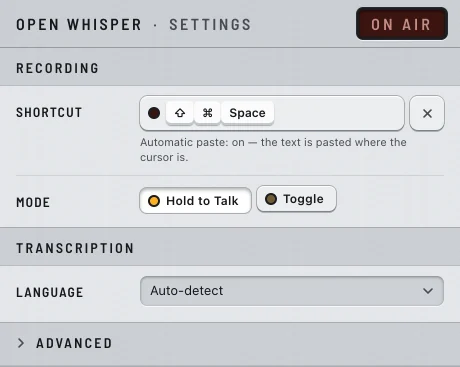
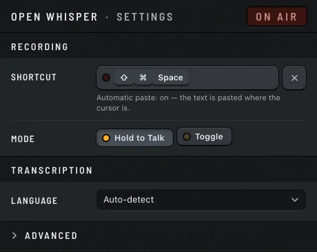
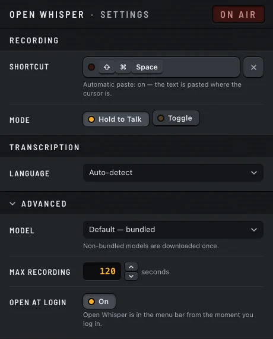

Open Whisper works with its defaults; the shortcut is the only thing you may want to change. This page goes through the Settings window field by field, in the order it shows them: Recording, Transcription, then Advanced.
Opening and saving
- Open the Open Whisper menu: click its icon in the menu bar (Mac) or in the notification area (Windows).
- Choose Settings….
Mac
The window is called Settings. Close it with Esc, ⌘. or ⌘W.
Windows
The window is called Settings. Close it with Esc or CtrlW.
If Windows is blocking the microphone, the top of Recording says Windows is blocking the microphone, so dictation only hears silence. Allow it in Settings → Privacy & security → Microphone, including for desktop apps. The key Open Windows Settings takes you to the page where you allow it.
- There is no Save button. Every change applies the moment you make it, and the next dictation uses it.
- The window fits its content and never scrolls. Everything in it works from the keyboard: Tab moves between fields.
- When the window comes back to the front, it reads the paste permission and the login item again, so a change you made in the system settings shows up here.
Recording
Shortcut
The key in this row shows the shortcut that starts a dictation. The default is ⇧⌘Space on the Mac and CtrlShiftSpace on Windows. It works whatever app is in front, and it needs no permission. To change it, see The shortcut recorder below.
Under the shortcut, one line says whether the text is pasted for you:
- Automatic paste: on — the text is pasted where the cursor is.
Mac
- Automatic paste: off — the shortcut works, and the text goes to the clipboard for you to paste with ⌘V.
Click Turn on… to grant the Accessibility permission. Where the text lands explains what it does and what it doesn't.
Windows
Windows needs no permission to paste, so the line always says it is on. When the text cannot be pasted (an administrator window, a password field), it stays on the clipboard: see Where the text lands.
Mode
- Hold to Talk (the default): records while you hold the keys and transcribes when you let go.
- Toggle: press once to start and again to stop.
Pick Toggle for long dictations, when holding keys gets tiring. Stop after silence, under Advanced, only exists in this mode. Dictate covers both modes in use.




The shortcut recorder
- Click the shortcut key, or move to it with Tab and press Space or Enter. It says Press shortcut….
- Press the new combination, all keys at once. It is saved as soon as it is complete.
- To back out, press Esc or Delete (Backspace on Windows) before you finish. Leaving the field does the same. The previous shortcut stays.
A shortcut is a modifier plus one key. The key can be a letter, a digit, F1 to F24, an arrow, Space, Enter, Tab or one of . , / \ - = [ ] ' ; and the backquote.
Mac
The shortcut must include ⌘, ⌃ or ⌥. ⇧ alone does not count. Without one, the recorder says Add ⌘, ⌃ or ⌥ to the chord.
Windows
The shortcut must include Ctrl or Alt. Shift alone does not count. Without one, the recorder says Add Ctrl or Alt to the chord. The Windows key is refused: The Windows key can't be part of the shortcut. Use Ctrl, Alt or Shift.
A function key on its own (say F5) is not a valid shortcut either: add a modifier to it.
When the shortcut is taken
The system keeps some combinations for itself. If you record one of them, Open Whisper warns you and listens on a fallback shortcut instead.
Mac
The warning reads … is reserved by macOS., with your shortcut at the start. The fallback is ⇧⌘D. Reserved: ⌘Space, ⌃Space, ⌃⌥Space, ⌘Tab, ⇧⌘3, ⇧⌘4, ⇧⌘5, ⌘Q, ⌘W.
Windows
The warning reads … is reserved by Windows., with your shortcut at the start. The fallback is CtrlShiftD. Reserved: CtrlAltDel, CtrlShiftEsc, CtrlEsc, CtrlSpace, AltTab, AltShiftTab, AltF4, AltSpace, AltEsc.
If another app already uses the combination, the warning reads … could not be registered. Under either warning, Keep closes the warning and Change arms the recorder again. Record a different shortcut. Until you do, Start Recording in the Open Whisper menu still starts a dictation, and that menu item shows the shortcut actually in use.
Windows
The default CtrlShiftSpace is also a shortcut in Word (a non-breaking space) and in VS Code. If you use them, record another one. In Hold to Talk, Esc cannot cancel a recording held with CtrlShiftSpace, because CtrlShiftEsc belongs to Task Manager. A shortcut such as CtrlAltSpace cancels with CtrlAltEsc. Dictate has the details.
Transcription
Language
Auto-detect (the default) lets the model recognise the language in each dictation, so you can switch languages from one dictation to the next. You can also pin one of 16 languages: Portuguese, English, Spanish, French, German, Italian, Dutch, Russian, Chinese, Japanese, Korean, Arabic, Hindi, Polish, Turkish, Ukrainian.
Pin a language if you always speak the same one: the transcription is more accurate than with auto-detect. The change applies to the next dictation. The video window uses this setting too.
Advanced
Click Advanced to open the section. It holds four options: Model, Max recording, Stop after silence and Open at login, which has its own section below.
Model
The speech model that transcribes your dictations. The list shows each one by name and size: Default (bundled), Light, Large and Most accurate. Below it: Non-bundled models are downloaded once.
Choosing a model that is not on the computer starts its download, with a progress bar. When it is done, the next dictation uses it, without a restart. If the download fails, the window says Download failed. The current model is still in use. and the choice goes back. Models explains each model and when to change.
Max recording
How long one dictation can last, in seconds: from 15 to 1800 (30 minutes). The default is 120. Type a number, or use the arrow buttons (one second per click, ten with Shift held). A number outside the range is brought back inside it.
When a recording reaches the limit, it stops, and what was captured is transcribed and pasted. The notification says Recording stopped at the time limit — transcribing what was captured. Raise the limit if this cuts your long dictations.
Stop after silence
Shown only in Toggle mode. Off by default. Press On to turn it on: the readout starts at 2 seconds, and later remembers the last value you used. Change it with the arrow keys or the buttons, in steps of half a second, from 1 to 10 seconds. Going below 1 second turns it off.
Once you've spoken, this much silence ends the recording. Silence before your first word never ends it, and neither do pauses shorter than the setting. The text is pasted as usual. If you press the shortcut within 1.5 seconds after it stopped by itself, the press counts as your "stop" and does not start a new recording.




Open at login
Open at login starts Open Whisper when you sign in to the computer, so the shortcut works without opening the app first. It is off by default. Press On to turn it on or off.
The switch belongs to the system, not to the app: it always shows what the system says. If you turn it off in the system settings, the window shows it off the next time it comes to the front.
Mac
Hint: Open Whisper is in the menu bar from the moment you log in. macOS may show its own notice that a login item was added. You can also turn it off in System Settings → General → Login Items.
The switch only works for a copy placed directly in /Applications or ~/Applications. Not in a subfolder, not run from the .dmg, not opened from Downloads.
| Message | What to do |
|---|---|
| Move Open Whisper to the Applications folder to use this option. | Quit, drag the app into Applications, open it from there. |
| Approve Open Whisper in System Settings → Login Items. | Click Open System Settings and switch Open Whisper on. |
| macOS could not find the app. Check System Settings → Login Items. | Click Open System Settings and check the entry. |
| macOS did not accept the change. Try again or check System Settings. | Press the switch again. |
| Could not read the state from macOS. | Close Settings and open it again. |
Windows
Hint: Open Whisper is in the notification area from the moment you sign in. You can also turn it off in Settings → Apps → Startup, or in Task Manager → Startup.
The switch only works for the copy installed by the installer.
| Message | What to do |
|---|---|
| Install Open Whisper with its installer to use this option. | Install it with the installer and open that copy. |
| Turned off in Windows Settings → Apps → Startup. Switch it on there, or here again. | Press the switch again, or click Open Windows Settings and switch it on there. |
| Windows could not find the app. Check Settings → Apps → Startup. | Click Open Windows Settings and check the entry. |
| Windows did not accept the change. Try again or check Settings → Apps → Startup. | Press the switch again. |
| Could not read the state from Windows. | Close Settings and open it again. |
To reset every setting at once, see Data and uninstalling.